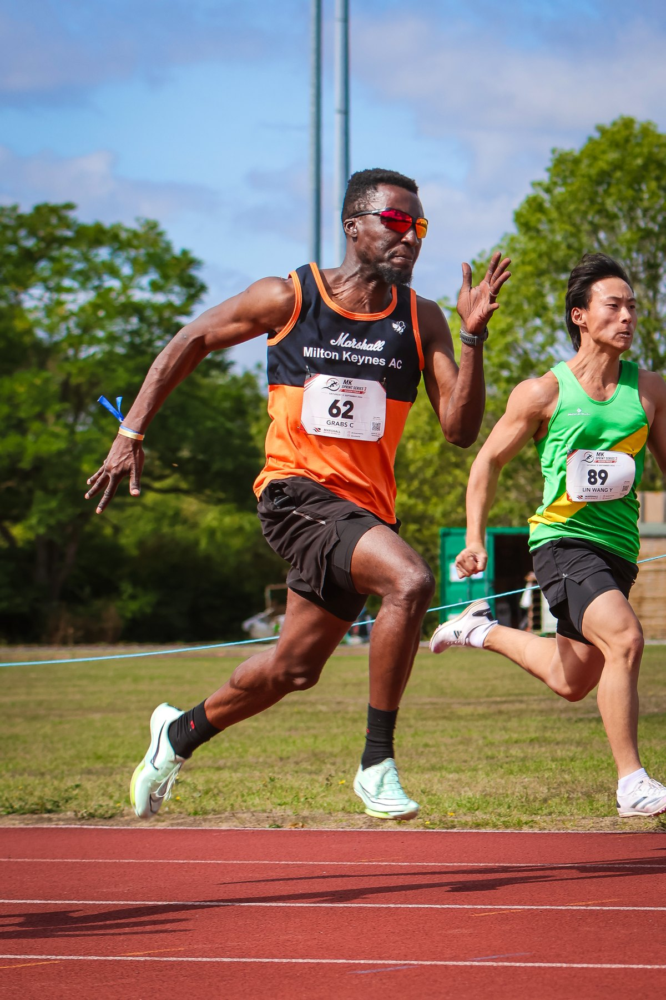
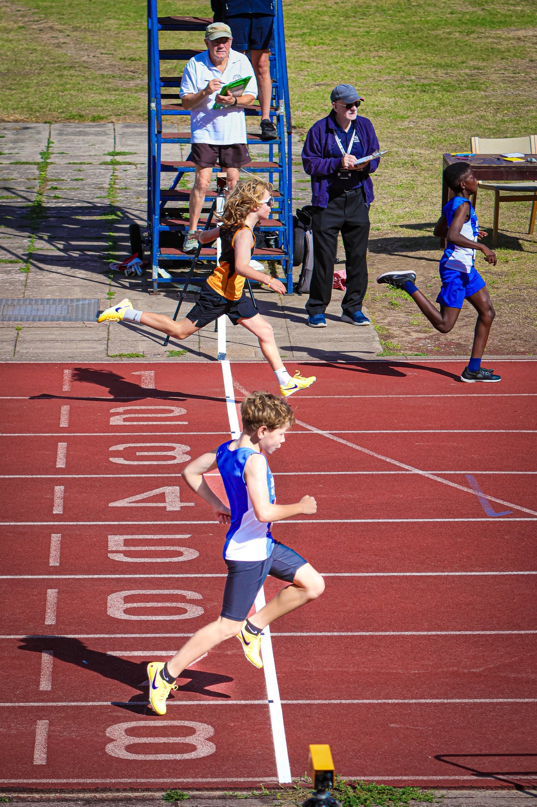

The MK Sprint Series completed its 2026 season at Stantonbury Stadium on Saturday, 5 September, bringing athletes from across the age groups to a one-day programme of track and field competition in Milton Keynes.
The official OpenTrack record lists 164 competitors, seven relay teams and 295 results across nine disciplines. Marshall Milton Keynes AC hosted the UK Athletics-licensed meeting, with fully automatic timing and electronic photo finish used throughout the track programme.

A full afternoon of sprint racing
The schedule included 75m, two rounds of the 100m, 150m, 200m, 300m and 400m races, together with the 4x100m relay. Senior shot put and discus completed the programme.
Samuel Clarke of Cambridge & Coleridge AC recorded the fastest listed 100m performance at 10.48, with a following wind of +4.5 m/s. Tiana Opara of Newham & Essex Beagles AC ran 9.92 in the 75m with a +2.7 m/s wind. The wind readings mean those marks should be read as race performances rather than record-legal times.

Marshall Milton Keynes AC leads the medal table
The host club finished at the top of the official medal table with seven gold, five silver and eight bronze medals. Cambridge & Coleridge AC placed second, while Huntingdonshire AC shared third place in the published standings.
From the youngest 75m athletes to senior and masters competitors, the finale reflected the series’ broad competitive field. Performance-seeded races placed athletes of similar speed together, while the relay and throws added variety to the final meeting of the season.
Image Media coverage
Reporting: IM News Editorial Desk
Photography: Julia Diresto / Image Media
Meeting details and results checked against the official OpenTrack event record.